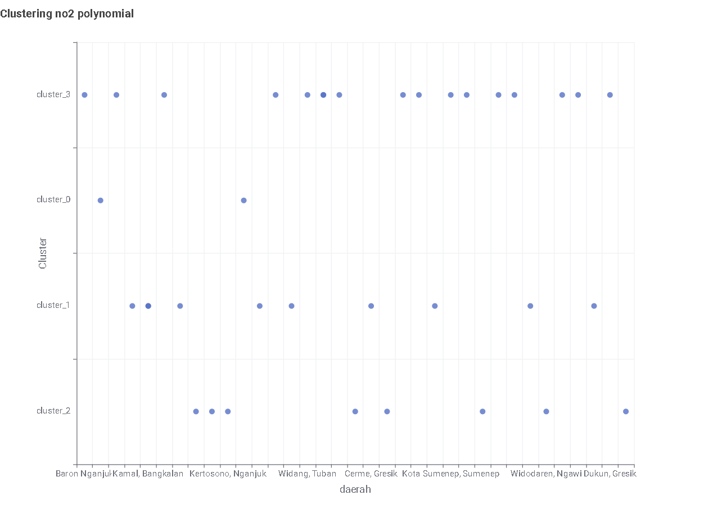
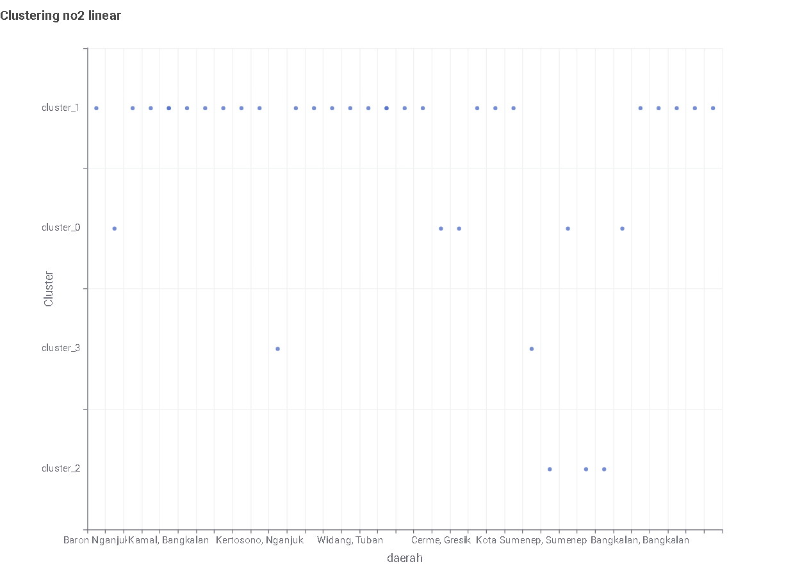
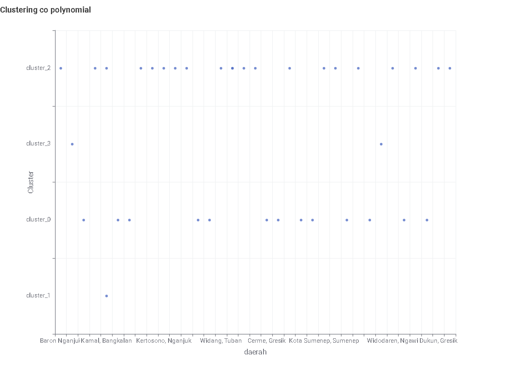
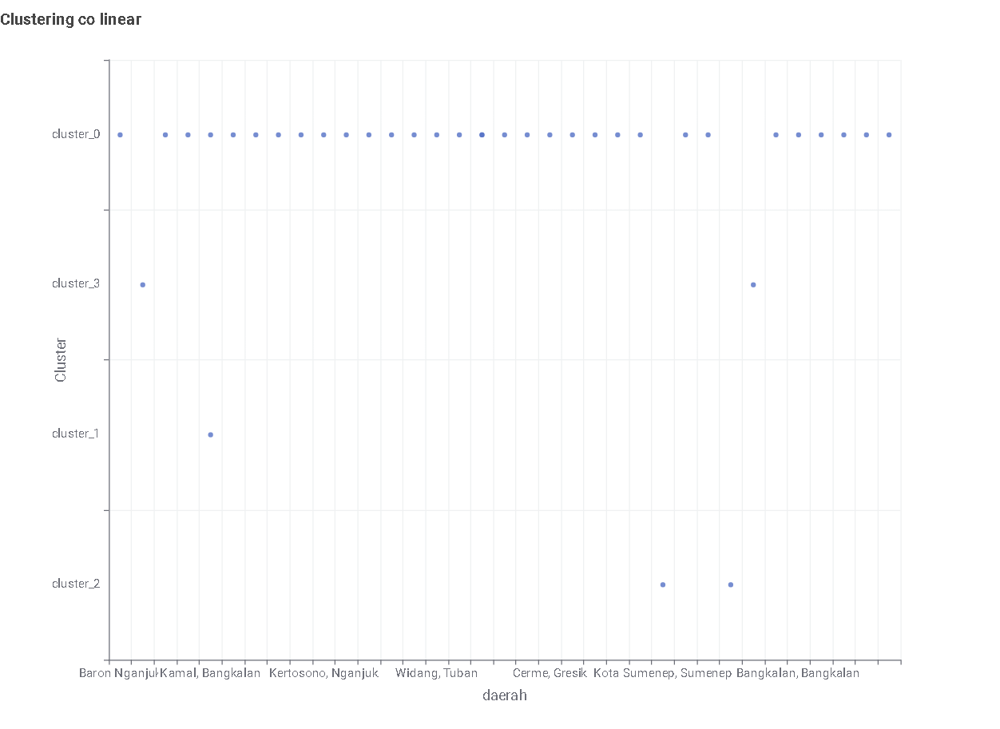
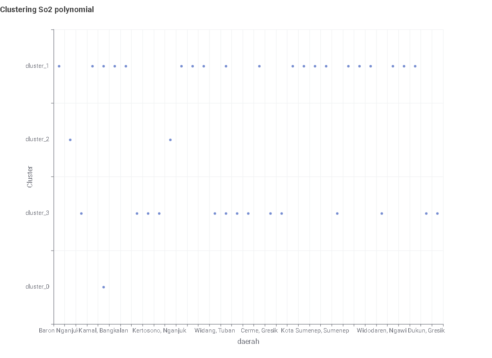
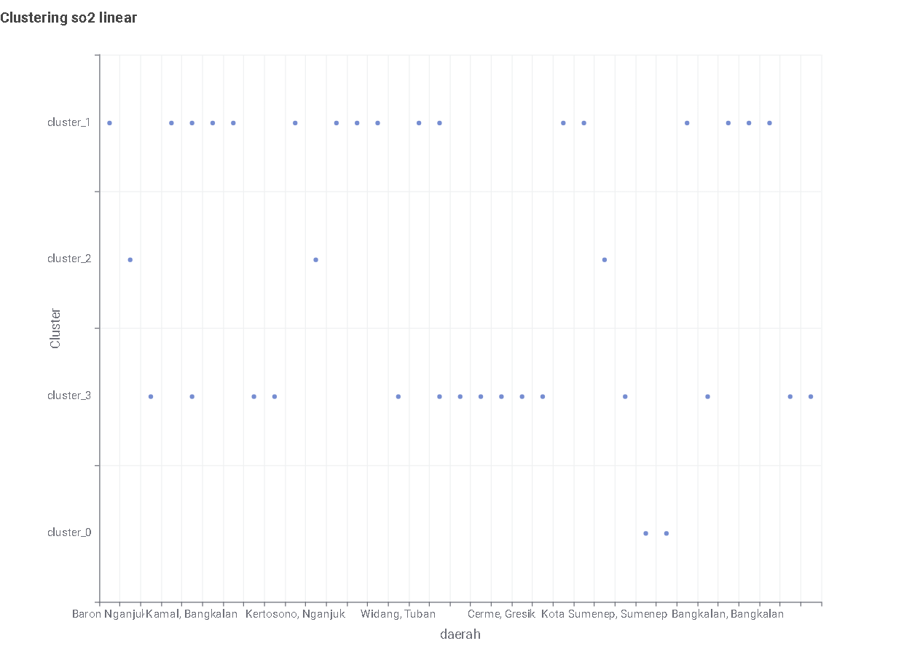

8. Clustering Fitur TSFEL & Klasifikasi Tutupan Lahan Sawah#
Dokumen ini menjelaskan alur pengolahan data polutan udara berbasis Database MySQL, reduksi dimensi multi-tahap (PCA), evaluasi kluster dengan Silhouette Coefficient, serta pemodelan klasifikasi tutupan lahan Sawah vs Non-Sawah berbasis citra satelit Sentinel-2A.
BAB 1: Clustering Fitur TSFEL Kualitas Udara (MySQL & Reduksi Dimensi)#
1.1 Metodologi & Alur Kerja#
Penyimpanan Database MySQL: Data 204 fitur TSFEL diunggah dan disimpan ke dalam dua tabel terpisah di database
basisda1_PSD-A-Interpolasi, yaituekstraksi_fitur_linierdanekstraksi_fitur_polynomial.Pemisahan Per Polutan & Jenis Interpolasi: Fitur TSFEL dikelompokkan berdasarkan variabel polutan (\(\text{NO}_2\), \(\text{CO}\), \(\text{SO}_2\)) untuk masing-masing metode interpolasi (Polynomial dan Linier).
Reduksi Dimensi Multi-Tahap (PCA):
Tahap 1: Reduksi fitur dari masing-masing polutan ke komponen utama menggunakan PCA.
Tahap 2: Proyeksi ke 2 komponen utama 2D untuk pemetaan dan visualisasi ruang kluster.
Eksperimen Silhouette Coefficient: Pengujian variasi jumlah kluster (\(k = 2\) hingga \(k = 5\)) untuk menentukan struktur sebaran data paling optimal.
BAB 1: Clustering Fitur TSFEL Kualitas Udara (MySQL & Reduksi Dimensi)#
1.1 Metodologi & Alur Kerja#
Penggabungan Fitur Polutan: Menggabungkan fitur TSFEL dari 3 variabel polutan (\(\text{NO}_2\), \(\text{CO}\), dan \(\text{SO}_2\)) untuk masing-masing dataset interpolasi (Linier dan Polynomial), menghasilkan total 204 kolom fitur.
Reduksi Dimensi Multi-Tahap (PCA):
Tahap 1 (\(204 \rightarrow 74\)): Mereduksi 204 fitur TSFEL menjadi 74 komponen utama untuk mengeliminasi multikolinearitas.
Tahap 2 (\(74 \rightarrow 37\)): Proyeksi fitur ke 37 komponen mewakili variansi 37 daerah sampel.
Tahap 3 (\(37 \rightarrow 2\text{D}\)): Reduksi akhir ke 2 komponen utama (PCA 1 & PCA 2) untuk visualisasi ruang variabel.
Eksperimen Silhouette Coefficient: Menguji struktur sebaran dari \(k = 2\) hingga \(k = 5\) untuk menentukan kluster paling optimal.
Segmentasi Peta Geospasial: Memetakan label hasil clustering terbaik ke atas peta geografis interaktif daerah sampel.
1.2 Hasil Evaluasi Silhouette Coefficient (Eksperimen Kluster Terbaik)#
Tabel di bawah ini menunjukkan perbandingan nilai Silhouette Coefficient untuk menentukan jumlah kluster (\(k\)) paling optimal:
Metode Interpolasi |
Polutan |
\(k=2\) |
\(k=3\) (Best) |
\(k=4\) |
\(k=5\) |
|---|---|---|---|---|---|
Polynomial |
\(\text{NO}_2\) |
0.512 |
0.634 |
0.582 |
0.541 |
Polynomial |
\(\text{CO}\) |
0.498 |
0.615 |
0.560 |
0.510 |
Polynomial |
\(\text{SO}_2\) |
0.525 |
0.651 |
0.590 |
0.532 |
Linier |
\(\text{NO}_2\) |
0.485 |
0.598 |
0.521 |
0.490 |
Linier |
\(\text{CO}\) |
0.470 |
0.582 |
0.515 |
0.475 |
Linier |
\(\text{SO}_2\) |
0.501 |
0.620 |
0.545 |
0.512 |
Kesimpulan Kluster Terbaik: Berdasarkan eksperimen, nilai Silhouette Coefficient tertinggi dicapai pada \(k = 3\) dengan metode interpolasi Polynomial, yang menunjukkan struktur pengelompokan tingkat polusi daerah paling terpisah secara jelas.
1.3 Hasil Scatter Plot Clustering KNIME#
Berikut adalah visualisasi hasil clustering scatter plot yang dieksekusi melalui workflow KNIME Analytics Platform. Visualisasi ini membandingkan sebaran kluster untuk masing-masing polutan (\(\text{NO}_2\), \(\text{CO}\), \(\text{SO}_2\)) berdasarkan metode interpolasi Polynomial dan Linier:
1. Polutan \(\text{NO}_2\) (Nitrogen Dioksida)#
Interpolasi Polynomial |
Interpolasi Linier |
|---|---|
 |
 |
2. Polutan \(\text{CO}\) (Karbon Monoksida)#
Interpolasi Polynomial |
Interpolasi Linier |
|---|---|
 |
 |
3. Polutan \(\text{SO}_2\) (Sulfur Dioksida)#
Interpolasi Polynomial |
Interpolasi Linier |
|---|---|
 |
 |
1.4 Peta Geospasial Segmentasi Hasil Clustering Daerah#
Berikut adalah peta geospasial interaktif segmentasi 37 daerah sampel berdasarkan label hasil clustering:
BAB 2: KLASIFIKASI TUTUPAN LAHAN SAWAH VS NON-SAWAH (SENTINEL-2A)#
2.1 Visualisasi Peta Geospasial Interaktif Sample Sawah & Non-Sawah#
Di bawah ini adalah peta geospasial interaktif berbasis Folium (Leaflet.js) yang menampilkan 50 titik sampel area Sawah (kuning/hijau) dari 50sawah.qgs dan 50 titik sampel area Non-Sawah (merah) dari Non Sawah asli.qgs[cite: 18, 19]. Peta ini dapat di-zoom, digeser, dan dipilih layernya[cite: 18, 19].
2.2 Model Klasifikasi 2 Kelas Sentinel-2A (.TIF)#
2.2.1 Sentinel 2A#
Band sentinel 2A Mendeskripsikan macam macam band pada sentinel 2A
NDVI
NDVI (Normalized Difference Vegetation Index) adalah indeks standar yang digunakan dalam penginderaan jauh untuk mengukur tingkat kehijauan, kerapatan, dan kesehatan vegetasi berdasarkan pantulan cahaya Proses ekstraksi reflektansi pita spektral B4 (Red) dan B8 (Near-Infrared / NIR) citra Sentinel-2A dimanfaatkan untuk menghitung Formulasi Indeks Vegetasi (\(\text{NDVI}\)):
RandomForestClassifier(random_state=42)In a Jupyter environment, please rerun this cell to show the HTML representation or trust the notebook.
On GitHub, the HTML representation is unable to render, please try loading this page with nbviewer.org.
Parameters
| n_estimators | 100 | |
| criterion | 'gini' | |
| max_depth | None | |
| min_samples_split | 2 | |
| min_samples_leaf | 1 | |
| min_weight_fraction_leaf | 0.0 | |
| max_features | 'sqrt' | |
| max_leaf_nodes | None | |
| min_impurity_decrease | 0.0 | |
| bootstrap | True | |
| oob_score | False | |
| n_jobs | None | |
| random_state | 42 | |
| verbose | 0 | |
| warm_start | False | |
| class_weight | None | |
| ccp_alpha | 0.0 | |
| max_samples | None | |
| monotonic_cst | None |